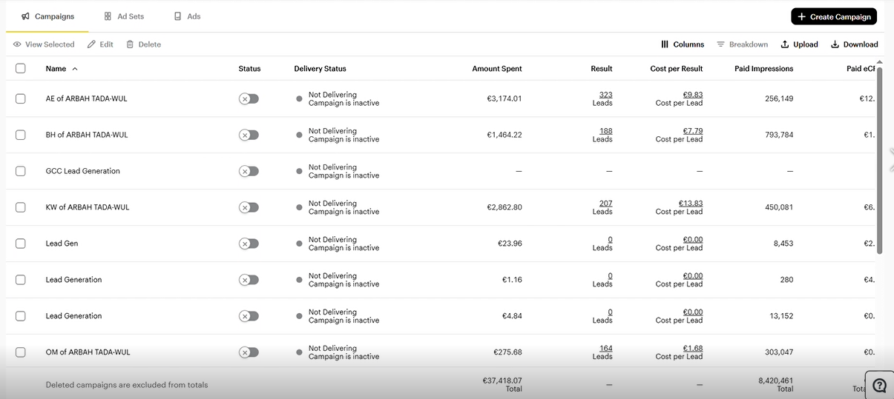

Forex Lead Generation – GCC (Snapchat Ads)
Snapchat Ads campaigns for a Forex broker targeting GCC countries, leveraging mobile-first creatives and localized messaging to generate high-volume leads at competitive cost per acquisition.

Campaign Overview
Objective: Generate a large volume of Forex leads from Snapchat across GCC markets using engaging short-form creatives tailored to mobile users.
Markets & audience: Gulf countries: KSA, UAE, Kuwait, Bahrain, Oman. Audience aged 21–45 interested in trading, Forex, investments, and online income opportunities.
Strategy & Setup
Account structure:
- Lead Generation campaigns segmented by country to control budget and performance.
- Optimization based on conversion events using Snapchat Pixel.
- Scaling best-performing regions such as UAE, Kuwait, and Oman.
Creatives & messaging:
- Short vertical videos aligned with Snapchat user behavior.
- Hooks focused on "Start trading", "Earn from Forex", and "Trade from your phone".
- Strong Arabic CTAs: "ابدأ التداول الآن", "سجل واحصل على استشارة مجانية".
Optimization approach:
- Continuous testing of creatives and hooks to improve CTR and CPL.
- Budget reallocation toward top-performing campaigns.
- Monitoring lead quality and optimizing based on sales feedback.
Results Snapshot
- Total spend: over 37,000 EUR across campaigns.
- Total leads: 800+ Forex leads generated.
- Average CPL: between 1.5€ and 14€ depending on country.
- Delivery: Millions of impressions across GCC markets with strong reach.
Snapchat campaigns delivered scalable Forex lead generation with strong volume and competitive CPL, making it a powerful acquisition channel alongside TikTok and Meta.
Key Learnings
- Snapchat is highly effective for scaling Forex leads in GCC markets.
- Simple, mobile-first creatives outperform complex visuals.
- Country-based optimization is key to maintaining profitability.
My Role
- Full Snapchat Ads strategy and campaign setup for Forex.
- Creative direction and script planning.
- Daily optimization of campaigns and budgets.
- Scaling high-performing campaigns across GCC.